Membuat Peta
[ Download PDF A4 Letter ]
Seringkali kita perlu membuat peta yang dapat dicetak atau diterbitkan. QGIS memiliki alat yang ampuh yang disebut: Print Composer dimana memperbolehkan anda untuk meletakkan layer-layer GIS dan membungkusnya untuk membuat peta-peta.
Tinjauan Tugas
Tutorial menunjukkan bagaimana membuat peta Jepang dengan elemen-elemen standar seperti inset, grid, tanda panah utara, skala dan label.
Skill lain yang akan anda pelajari
Mendapatkan data
Kita akan menggunakan data Natural Earth - Natural Earth Quick Start Kit datang dengan layer-layer global beragam yang langsung dapat dimasukkan langsung ke QGIS.
Download Natural Earth Quickstart Kit.
Sumber data [NATURALEARTH]
Prosedur
Download dan ekstrak data Natural Earth Quick Start Kit. Buka QGIS. Klik .
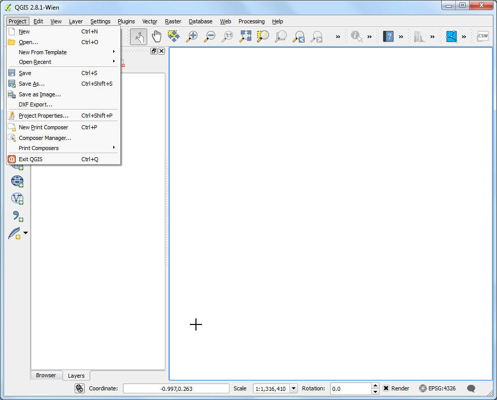
Browse ke direktori dimana anda mengekstrak data Natura Earth. Anda seharusnya melihat file bernama: Natural_Earth_quick_start_for_QGIS.qgs. Ini merupakan file proyek yang berisikan layer-layer bergam dalam format dokumen QGIS. Klik Open.
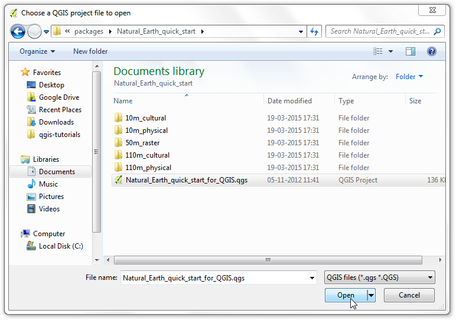
Anda akan melihat layer-layer dalam daftar isi dan peta dunia pada kanvas QGIS. Apabila anda melihat eror tampil di bagian atas kanvas, klik pada silang untuk menutupnya.

Di tutorial ini, kita akan membuat peta Jepang. Klik tombol Zoom In dan gambar persegi pada Jepang untuk memperbesar area.

Anda dapat menonaktifkan layer peta untuk data yang tidak kita perlukan dalam Peta ini. Hapus tanda cek pada layer 10m_geography_marine_polys dan 10m_admin_0_map_units. Sebelum kita membuat peta agar bisa untuk dicetak, kita perlu memilih proyeksi yang cocok. Dataset ini memakai Geographic Coordinate System (GCS) dimana unit yang dipakai adalah derajat. Ini tidak cocok untuk sebuah peta dimana anda ingin satuan jarak dalam unit kilometer atau mil, Kita perlu menggunakan Projected Coordinate System yang bisa meminimalisir distorsi pada daerah yang ingin kita petakan dan mempunyai unit meter. Universal Transverse Mercator (UTM) adalah pilihan yang baik untuk sistem koordinat terproyeksi. Ini juga dipakai secara global, jadi ini adalah settingan awal yang baik jika anda memilih sebuah zona UTM untuk daerah pemetaan anda agar meminimalisir distorsi. Dalam kasus kita, kita akan menggunakan UTM zona 54N. Klik :guilabel:`CRS Status`tombol di bawah kanan jendela QGIS
Catatan
Untuk Jepang, Japan Plane Rectangular CS adalah sistem referensi koordinat (CRS) yang didesain untuk meminimalisir distorsi. Dibagi menjadi 18 zona dan jika anda bekerja dengan wilayah yang lebih kecil di Jepang, akan lebih baik jika memakai CRS ini.
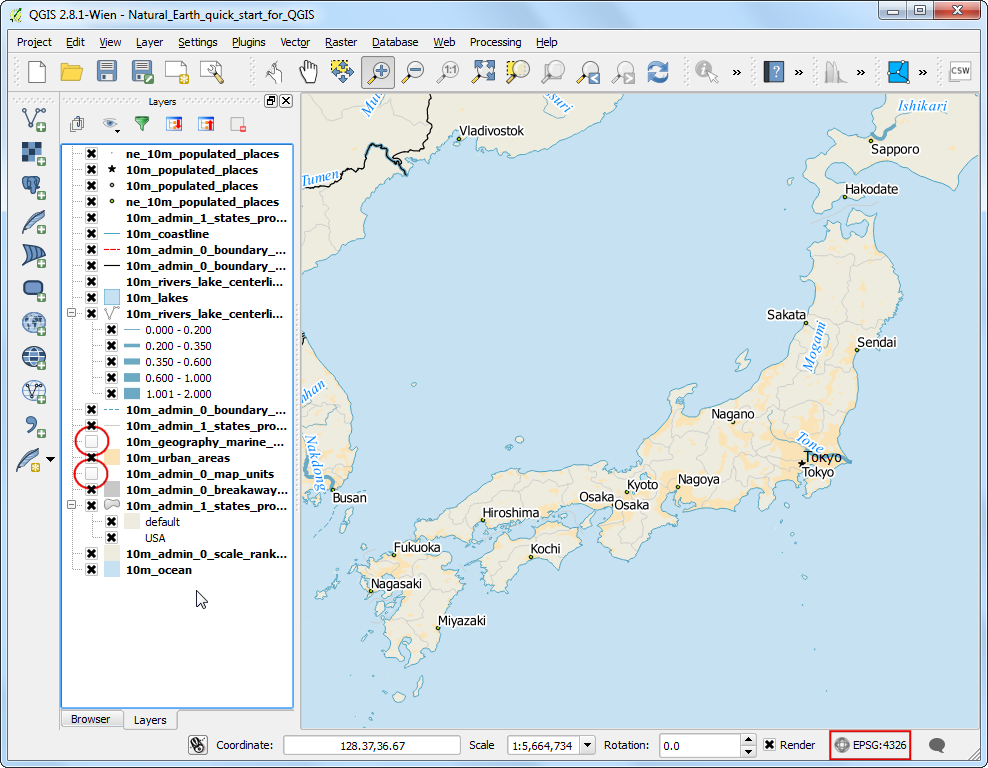
Centrang kotak Enable on-the-fly CRS Transformation. Ketik Tokyo utm zone54n` pada kotak pencarian Filter. Saat anda melihat hasilnya, pilih Tokyo / UTM Zone 54N - EPSG:3095. Klik Apply.

Sekarang kita bisa mulai untuk merakit Peta kita. akses .

Anda akan diarahkan untuk memasukkan sebuah judul untuk komposer. Anda membiarkannya kosong dan klik Ok.
Catatan
Dengan membiarkan nama komposer kosong membuat nama menjadi Composer 1.

Di Jendela Print komposer, klik Zoom full untuk menampilkan jangkauan penuh pada layout. Sekarang kita perlu membawa tampilan peta yang kita lihat pada kanvas QGIS ke komposer. Akses .

Ketika tombol Add Map sudah aktif, klik dan tahan tombol kiri pada mouse dan gambarlah sebuah segiempat di mana anda ingin menaruh peta

Anda akan melihat Jendela segiempat akan dirender dengan Peta dari kanvas utama QGIS. Peta yang sudah dirender mungkin tidak melingkupi seluruh luas area yang ingin dipetakan. Pilih untuk menggerakan peta dan menaruhnya di tengah pada komposer.
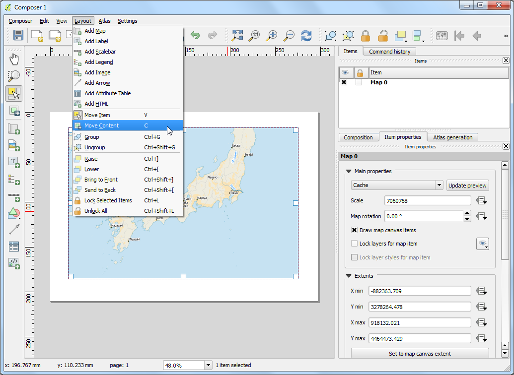
Mari kita sesuaikan level zoom untuk peta. Klik tab Item Properties dan masukkan 7000000 untuk Scale.

Sekarang kita akan menambahkan inset yang menunjukkan daerah yang dizoom pada area Tokyo. Sebelum kita membuat perubahan pada layer in jendela utama QGIS, centrang kotak check the Lock layers for map item dan Lock layer styles for map item. Hal ini untuk memastikan bahwa jika kita menonaktifkan beberapa layer atau mengubah stylenya, tampilan ini tidak akan berubah
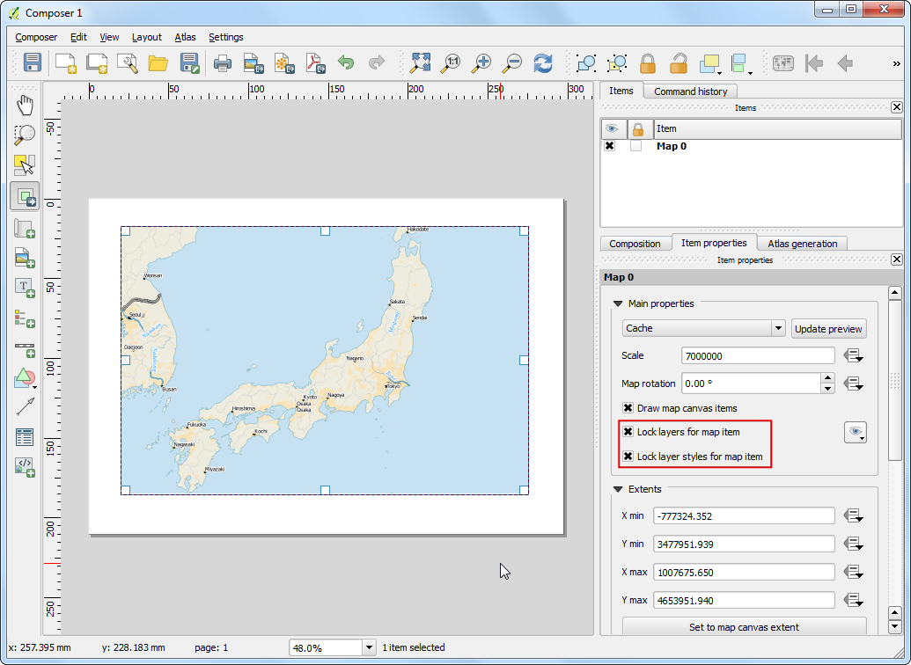
Ganti ke jendela utama QGIS. Gunakan tombol Zoom In untuk menzoom pada area sekitar Tokyo
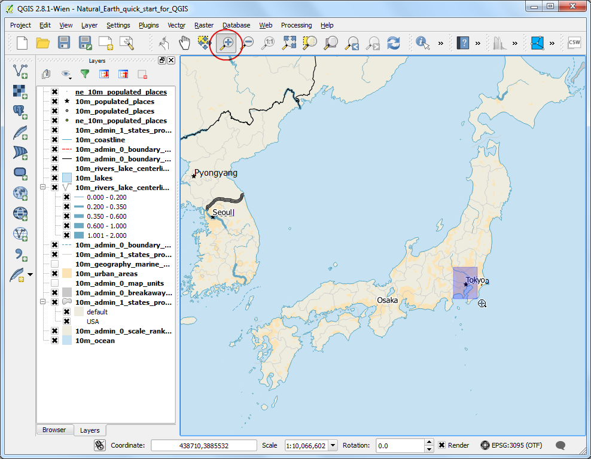
Terdapat beberapa label duplikat dari layer ne_10m_populated_places. Anda dapat menonaktifkannya untuk tampilan ini

Sekarang kita siap untuk menambahkan inset. Ganti ke jendela Print Composer. Akses to .

Klik dan tahan pada tempat dimana anda ingin menambahkan inset tersebut. Anda akan melihat bahwa sekarang kita mempunya 2 objek peta dalam Print komposer. Saat melakukan perubahan, pastikan anda sudah memilih objek peta yang benar. Dari panel guilabel:Items panel, pilih objek Map 1 yang baru saja kita tambahkan. Pilih tab Item properties. Gulir atau scroll ke bawah sampai ada panel Frame dan centrang box di dekatnya. Anda dapat mengubah warna dan ketebalan batas bingkai agar mempermudah membedakan dengan latar belakang peta

Satu fitur dari Print Komposer yakni dapat secara otomatis menandai area dari peta utama yang terepresentasi dalam inset kita. Pili objek Map 0 dari panel Items. Di tab Item properties, scroll ke bawah sampai bagian Overviews. Klik tombol Add a new overview

Pilih Map 1 sebagai Map Frame. Apa yang diberitahukan Print Komposer ini bahwa ini menandai objek Map 0 dengan jangkauan peta yang ditunjukkan pada objek Map 1.

Sekarang kita sudah mempunyai inset, kita akan menambah sebuah grid dan batas zebra pada peta utama. Pilih objek Map 0 dari panel Items. Di tab Item properties , scroll ke bawah sampai bagian Grids. Klik tombol Add a new grid
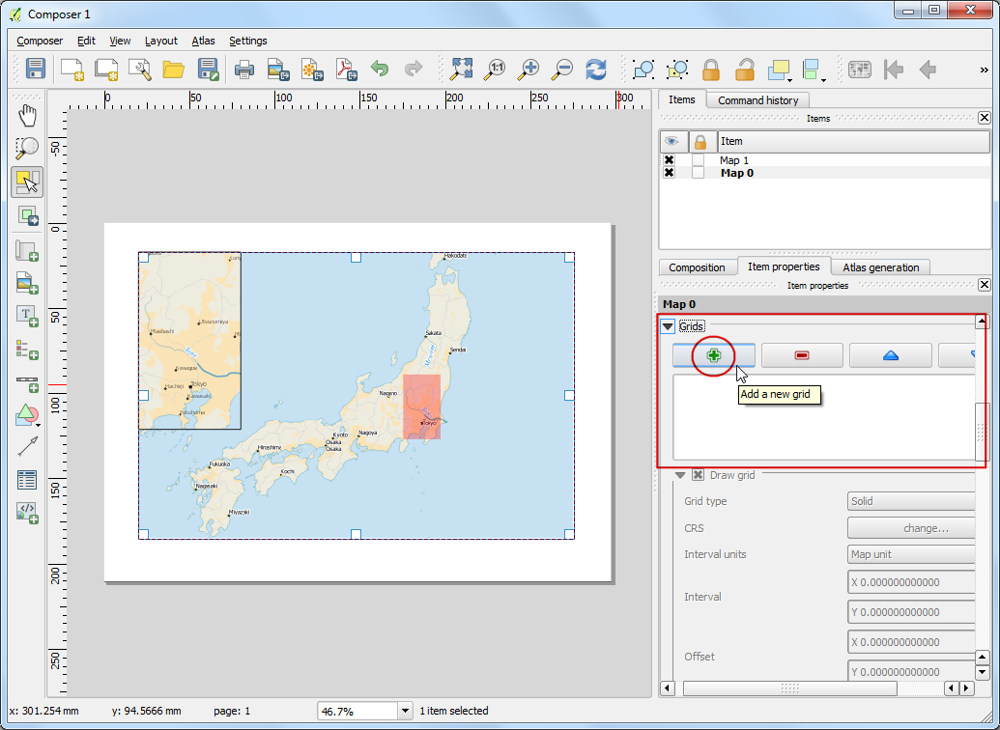
Pada pengaturan awal, garis grid menggunakan unit dan proyeksi yang sama dengan peta yang sedang aktif atau dipilih. Tapi, akan lebih umum dan berguna untuk menampilkan garis grid dalam derajat. Kita dapat memilih CRS yang berbeda untuk grid. Klik tombol change... pada CRS.

Pada dialog Coordinate Reference System Selector dialog,masukkan 4326 dalam kotak the Filter . Dari hasil, pilih WGS84 EPSG:4326 sebagai CRS. Klik OK.

pilih Interval dengan nilai 5 derajat pada arah X and Y . Anda dapat mengatur Offset untuk mengubah di mana garis grid muncul.
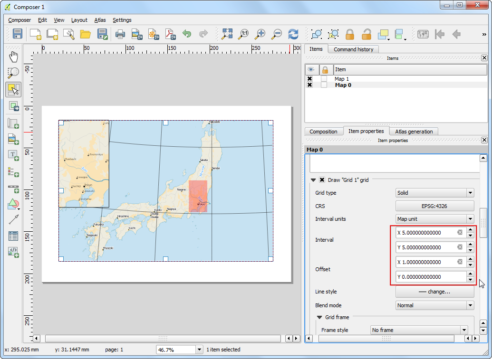
Scroll ke bawah sampai bagian Grid frame dan pilih sebuah style bingkai yang cocok dengan selera anda. Centrang juga box Draw coordinates .

Atur Distance to map frame sampai koordinat dapat terbaca. Ubah Coordinate precision ke 1 sehingga koordinat yang ditampilkan hanya sampai satu desimal
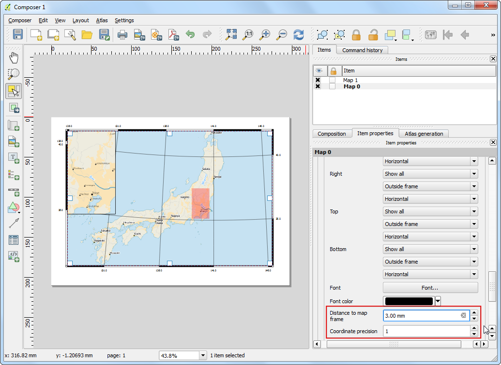
Sekarang kita akan menambahkan arah panah utara di peta. Print Komposer mempunyai koleksi gambar-gambar yang berhubungan dengan pemetaan - termasuk jenis-jenis arah panah utara. Klik .

Klik dan tahan tombol kiri mouse anda, gambar segi empat pada bagian atas kanan kanvas peta. Di panel sebelah kanan, klik tab Item Properties dan telusuri bagian Search directories dan pilih gambar arah panah utara yang anda suka
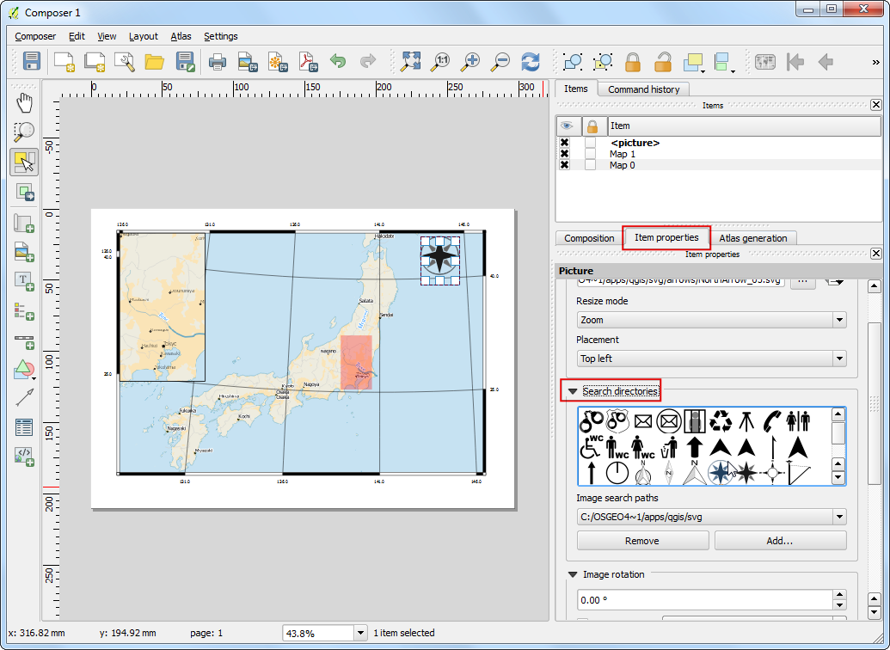
Sekarang kita akan menambahkan batang skala. Klik .
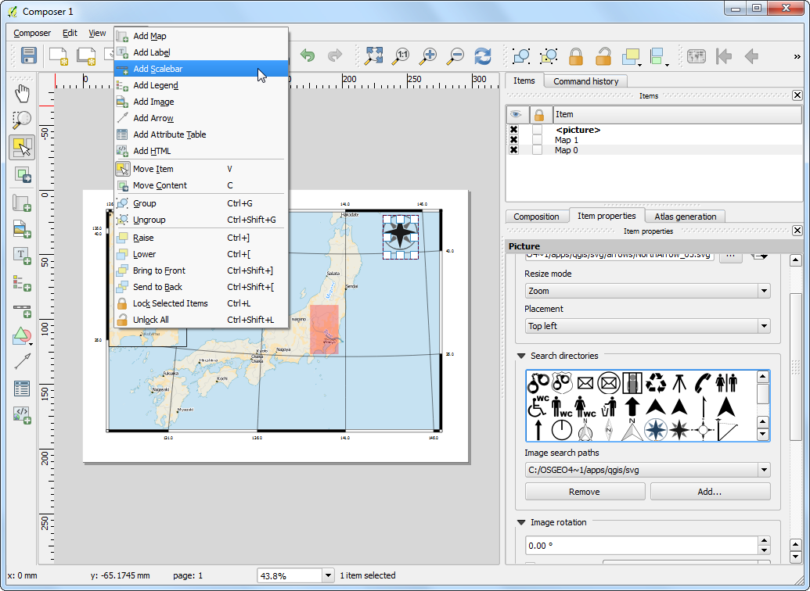
Klik pada layout dimana anda ingin skala tersebut muncul. Pada tab Item Properties , pastikan anda sudah memilih elemen peta yang tepat untuk menampilkan batang skala. Pilih style yang sesuai dengan apa yang anda cari. Pada panel Segments , anda dapat mengatur jumlah dan ukuran segmen skala.
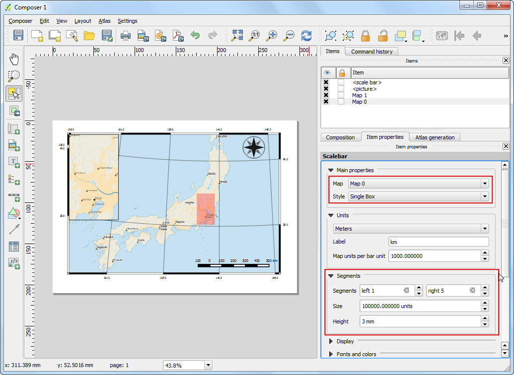
Sekarang saatnya untuk melabeli peta kita. Klik .

Klik pada peta dan gambar kotak di mana label seharusnya berposisi. Pada tab Item Properties , terlusuri seksi Label dan masukkan teks seperti yang ditunjukkan di bawah. Kita dapat memasukkan teks sebagai HTML. Centrang kotak Render as Html sehingga komposer akan mengintepretasikan tag HTML
<div align=center>
<h1>Map of Japan</h1>
</div>
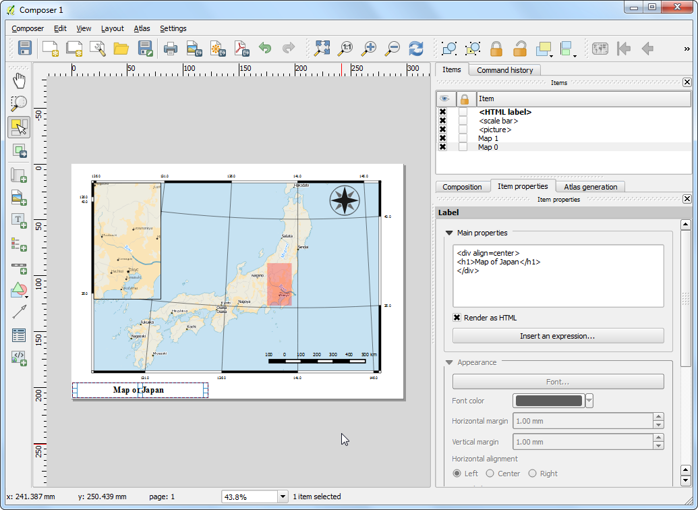
Dengan langkah yang sama tambahkan label lain untuk data dan kredit sotware

Kalau anda sudah puas dengan peta, anda dapat mengekspor peta sebagai gambar,PDF atau SVG. Untuk tutorial ini, mari kita ekspor peta sebagai gambar. Klik .

Simoan gambar dalam format yang anda suka. Di bawah ini adalah gambar hasil ekspor dengan jenis PNG